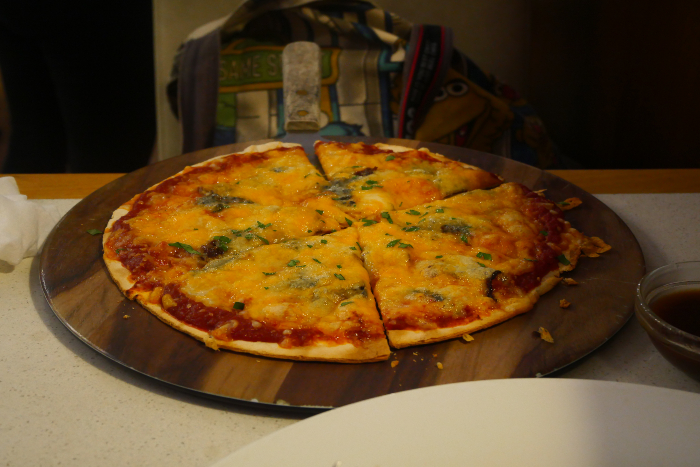
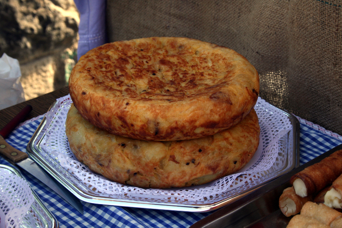
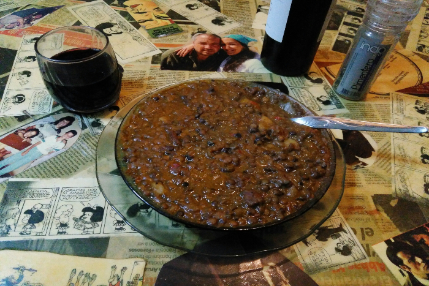

Empanadas Salteñas
Las empanadas salteñas se destacan porque contienen como ingrediente diferencial la papa y la carne se corta a cuchillo. Se pueden hacer fritas o al horno.
Ver más

Pizza
Si queremos indagar en quién inventó la pizza tendremos que remontarnos a principios del siglo XVI en Pompella y Nápoles.
Ver más

Tortilla de papa
La tortilla de papa está hecha a base de huevo y papas, aunque también se le puede añadir más ingredientes. Se trata de uno de los platos más conocidos y emblemáticos de la cocina española,
Ver más

Guiso de lentejas
En Italia despiden el año con lentejas. Debido a su forma, las lentejas recuerdan a pequeñas monedas, por lo que recibir el nuevo año comiéndolas debería asegurar prosperidad.
Ver más